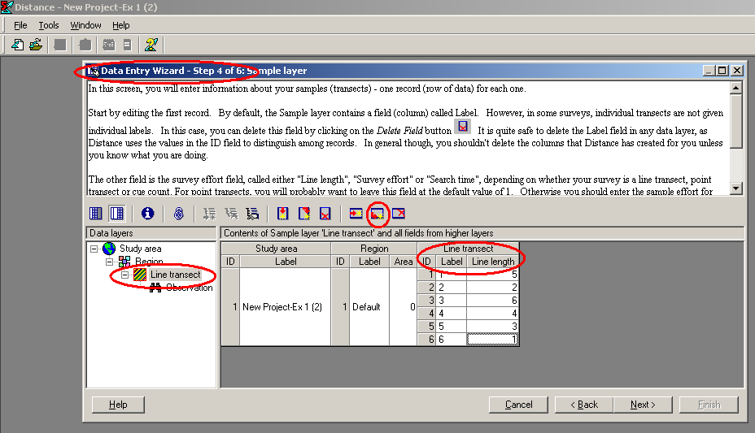
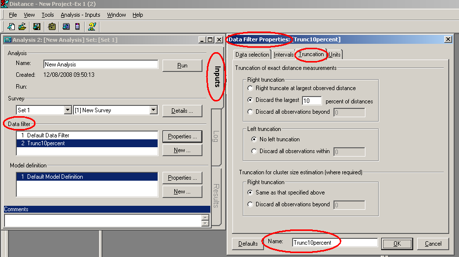

V1 V2 V3
1 1 240 28
2 1 240 17
3 1 240 15
4 1 240 14
5 1 240 18
6 1 240 0Additional detection function modelling using Distance for Windows software
More detection function modelling and model criticism
Distance for Windows exercise
1a). The line transect data below were generated from a half-normal detection function model. You may either enter the data by hand (if you want practice doing this) using instructions in the next bullet point, or skip to step 1b) to open a project containing the data to begin analysis.
- Open a new project (click on File then on New project …), name it, and click on Create. Step through the New Project Setup Wizard (you should not need to change any of the defaults, except the units for density estimates to km2 not the default hectares, but study each page) and click on Finish. This takes you to the Data Entry Wizard. Click Next until you get to the “line transect” page Step 4 of 6: Sample layer. Enter say the first 6 line labels (e.g. “line 1”, “line 2”, …) and lengths (5, 2, …). You need to click on the “append new record after current” button on the menu bar or type
CTRL + Entertogether before entering the information for each line.

- When you have finished, click on Next and enter the distances corresponding to each observation in a similar fashion (using
CTRL + Enterbetween each observation). Once you have entered the distance data, go to the analysis browser, and carry out an analysis of these data using the half-normal detection function key.
Perpendicular distances in metres generated from a half-normal line transect detection function model.
Line 1; length 5km
7.9 10.2 12.4 3.8 4.8 8.5 13.4 5.8 7.5 11.5 0.9 9.2 12.5 6.1
Line 2; length 2km
9.1 6.4 21.2
Line 3; length 6km
3.8 12.6 4.7 17.9 14.5 5.1 4.2 3.6
Line 4; length 4km
11.2 12.2 1.8 35.8 2.6 6.2 9.7 4.0 9.7
Line 5; length 3km
6.9 5.1 3.3
Line 6; length 1km
6.0 18.4 3.8 2.9
Line 7; length 4km
3.3 2.9 3.7 13.2 1.0 2.3 13.4 16.2 3.8 19.3 11.1
Line 8; length 4km
0.8 1.5 0.7 10.2 10.0 0.6 7.6 4.4
Line 9; length 5km
1.0 1.0 1.2 4.6 9.2 15.8 1.9 3.3 3.7 5.8 5.9 4.8 12.4 7.6 10.6 17.8 5.8
Line 10; length 7km
0.0 0.6 2.0 6.9 7.2 7.7 10.2 1.3 1.7 8.4 13.4 19.4 12.8 13.2 6.3 10.0 12.4 19.5 1.7 3.1 3.3 19.4 16.6
Line 11; length 3km
no detections
Line 12; length 4km
1.0 6.6 12.4 4.9 15.41b) The full data set is in project Exercise3-2023.zip Download the file from this link and save the file in a location on your computer. Open Distance for Windows. Choose Open project and select zip file type to open the file and begin analysis.
- Experiment with keys other than the half-normal (uniform, hazard-rate and negative exponential), to assess whether these data can be satisfactorily analysed using the wrong model.
- For each key, determine a suitable truncation point, and decide on whether, and which, adjustments are needed. Truncation points come under the data filter – click New… in the Data Filter section and create and name your own data filter, including truncation. In the example data filter below, the largest 10% of distances were truncated–- you may want to truncate at a specific distance, depending on the data.
- Given that the true density was 79.8 animals / km2 for these data, how do bias and precision compare between models?

Additional question with another line transect data set
.jpg)
2. Below are perpendicular distance data (m) from line transect surveys of capercaillie (a large grouse) in Scotland. Total line length was 240km. The data are also in a text file capercaillie.txt you may download from this link and save on your computer. Description of a line transect survey of this species is presented in (Catt et al., 1998)
In the text file, column 1 is the transect number, column 2 is the transect length and column 3 is perpendicular distance as shown.
Columns are separated by tab characters. Create a new Distance project and either enter the data by hand or use the Data Import Wizard (Tools > Import Data Wizard) to import the data from the text file. Then decide on a suitable model for the detection function and estimate bird density.
Capercaillie, Monaughty Forest 112 detections
28.0 17.0 15.0 14.0 18.0 0.0 38.0 6.0 50.0 65.0
75.0 1.0 70.0 28.0 40.0 40.0 40.0 15.0 40.0 30.0
5.0 55.0 60.0 40.0 24.0 30.0 0.0 50.0 55.0 10.0
40.0 10.0 30.0 34.0 24.0 30.0 15.0 20.0 14.0 48.0
0.0 30.0 2.0 52.0 11.0 48.0 28.0 38.0 25.0 35.0
45.0 0.0 16.0 12.0 2.0 14.0 12.0 24.0 70.0 50.0
49.0 40.0 80.0 18.0 27.0 30.0 30.0 60.0 58.0 14.0
0.0 56.0 40.0 19.0 21.0 0.0 38.0 20.0 28.0 30.0
20.0 16.0 0.0 69.0 40.0 46.0 50.0 40.0 70.0 67.0
28.0 12.0 12.0 22.0 40.0 48.0 48.0 15.0 12.0 0.0
15.0 20.0 17.0 30.0 30.0 32.0 48.0 20.0 10.0 20.0
42.0 30.0References
Catt, D. C., Baines, D., Picozzi, N., Moss, R., & Summers, R. W. (1998). Abundance and distribution of capercaillie Tetrao urogallus in Scotland 1992–1994. Biological Conservation, 85(3), 257–267. https://doi.org/10.1016/s0006-3207(97)00171-7